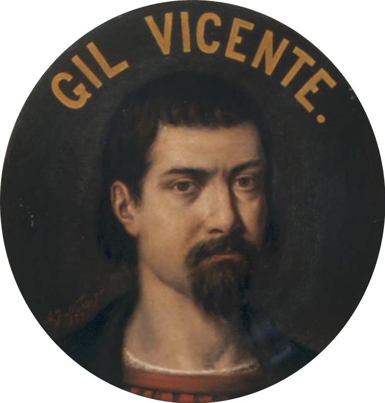
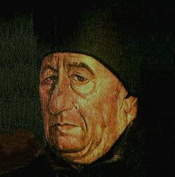
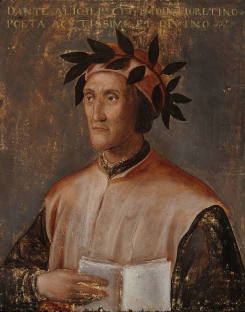
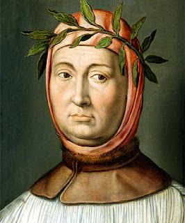

Gil Vicente
Pai do teatro português, famoso por seus autos satíricos como o Auto da Barca do Inferno.

Pai do teatro português, famoso por seus autos satíricos como o Auto da Barca do Inferno.

Pai da historiografia portuguesa e cronista-mor da Torre do Tombo.

Poeta italiano, autor de A Divina Comédia e precursor do pensamento humanista.

Considerado o pai do Humanismo e mestre da poesia lírica e dos sonetos.